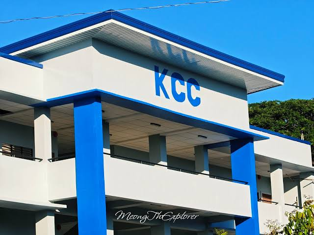

Christ-centered learning • Faith • Service
Learn with purpose.
Lead with heart.
Welcome to Kabankalan Catholic College—a learning community inspired by faith, guided by knowledge, and committed to making a positive difference.
Welcome to KCC
Education rooted in faith and purpose
Kabankalan Catholic College is presented here as a Christ-centered learning community that encourages students to grow in knowledge, character, competence, and service. This student-made website is an informational project.
Read About KCC
What guides us
Faith. Learning. Community.
Faith & Values
Grow in Christ-centeredness, kindness, integrity, and care for others.
Learning & Growth
Develop knowledge, creativity, and competence through education.
Service & Community
Use learning to contribute to the community and positive change.
KCC's four pillars
What We Stand For
The College's public website highlights four pillars that shape student learning and formation.
Academic Excellence
Rigorous learning that encourages critical thinking and a love of learning.
Faith Formation
Faith nurtured through Catholic tradition, prayer, and relationship with God.
Community Service
Putting Gospel values into practice through service to others.
Holistic Development
Developing capable learners grounded in strong values.
Start exploring